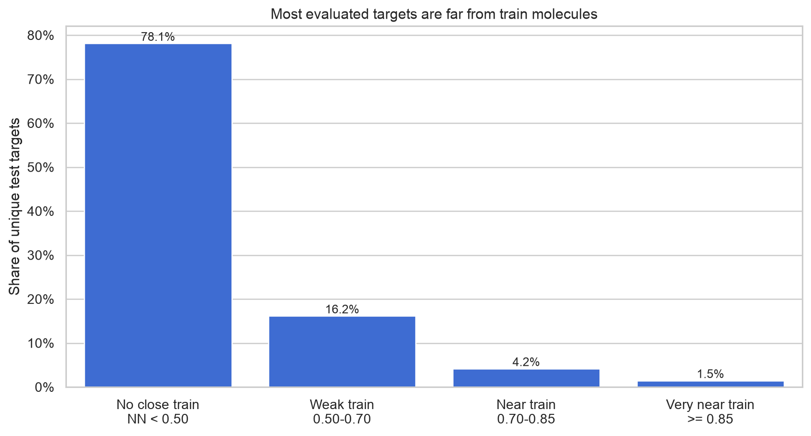
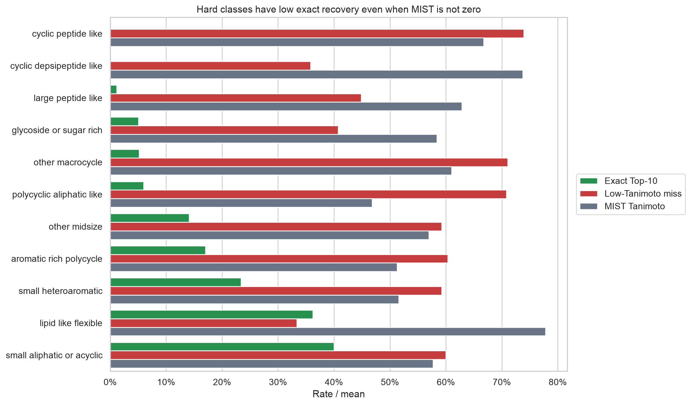
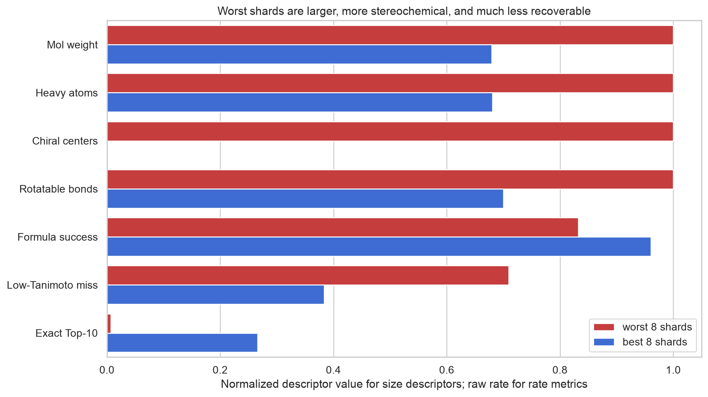
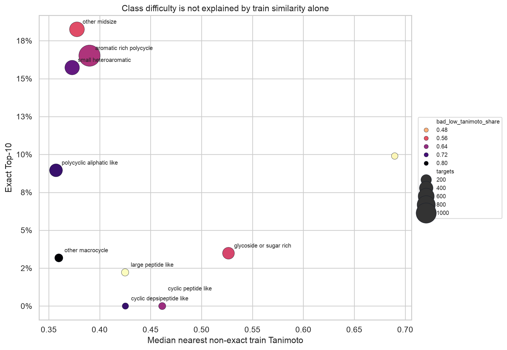
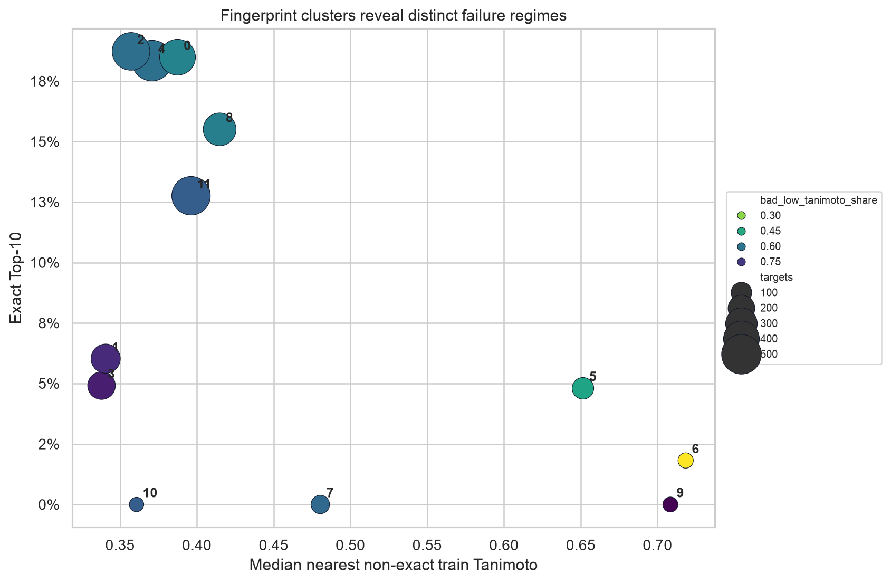

FRIGID MSG Base: Chemical Failure and Train Coverage
Integrated technical report over the full MSG FRIGID-base NGBoost run, the chemical EDA, and the MassSpecGym train-overlap analysis. The goal is to answer which molecules fail and whether that chemistry exists in train.
Main Conclusions
1. The weak shard tail is real and chemically structured. Worst 8 shards are 0.72% Exact Top-10 versus 26.59% for best 8 shards. They are much heavier and more stereochemically dense: median MW 655 vs 445, heavy atoms 47 vs 32, chiral centers 8 vs 0.
2. The hard classes are not generic small molecules. Cyclic peptide-like, cyclic depsipeptide-like, large peptide-like, glycoside/sugar-rich, macrocycle, and polycyclic aliphatic/steroid-like regions have the weakest exact recovery.
3. Train exact overlap is zero for evaluated test targets. None of the 2,905 benchmark target InChIKeys appear in train. That is good split hygiene, but it means the model must generalize by chemistry rather than memorize exact molecules.
4. Most test targets are not close to train by Morgan fingerprint. Only 1.48% have a non-exact train neighbor with Tanimoto >= 0.85, and 5.68% have one >= 0.70. The difficult glycoside/peptide/polycyclic families are therefore often OOD or near-OOD in structure space.
Train Coverage Answer

Interpretation
The answer to “were such structures in train?” is mostly no at exact-target level and mostly weak at nearest-neighbor level.
This supports an OOD/generalization explanation, but not uniformly: a few bad clusters have moderate train-neighbor similarity and still fail, so decoder/ranking remains a second failure mode.
| train_coverage_bin | targets | spectra | exact_in_train_share | median_nn_train_tanimoto | p25_nn_train_tanimoto | p75_nn_train_tanimoto | share_nn_ge_085 | share_nn_ge_070 | exact_top10 | bad_low_tanimoto_share | mist_tanimoto | mol_wt_median | heavy_atoms_median | chiral_centers_median |
|---|---|---|---|---|---|---|---|---|---|---|---|---|---|---|
| ood_lt_0.50 | 2270.0000 | 10813.0000 | 0.0000 | 0.3625 | 0.3239 | 0.4047 | 0.0000 | 0.0000 | 0.1380 | 0.6682 | 0.4892 | 422.3950 | 30.0000 | 0.0000 |
| weak_train_0.50_0.70 | 470.0000 | 3864.0000 | 0.0000 | 0.5750 | 0.5278 | 0.6271 | 0.0000 | 0.0000 | 0.1494 | 0.5275 | 0.5629 | 486.5355 | 35.0000 | 1.0000 |
| near_train_0.70_0.85 | 122.0000 | 1248.0000 | 0.0000 | 0.7428 | 0.7189 | 0.7879 | 0.0000 | 1.0000 | 0.0984 | 0.4413 | 0.6351 | 636.1220 | 45.0000 | 4.0000 |
| near_train_ge_0.85 | 43.0000 | 1157.0000 | 0.0000 | 0.9200 | 0.8878 | 0.9687 | 1.0000 | 1.0000 | 0.0127 | 0.4120 | 0.6407 | 768.7650 | 54.0000 | 14.0000 |
Chemical Classes

What fails
Hardest classes by Exact Top-10:
These are chemistry-heavy regions: peptides/depsipeptides, glycosides, macrocycles, and polycyclic aliphatic-like structures. They are large, oxygen-rich, stereochemically rich, and often have many rings or flexible substituents.
| chem_class | spectra | unique_targets | exact_top1 | exact_top10 | tanimoto_top10 | mist_tanimoto | formula_success | bad_low_tanimoto_share | near_miss_high_tanimoto_share | mol_wt_median | heavy_atoms_median | ring_count_median | max_ring_size_median | amide_count_median | ester_count_median | chiral_centers_median | rotatable_bonds_median |
|---|---|---|---|---|---|---|---|---|---|---|---|---|---|---|---|---|---|
| aromatic_rich_polycycle | 4838.0000 | 1120.0000 | 0.1507 | 0.1703 | 0.4800 | 0.5131 | 0.9613 | 0.6036 | 0.0415 | 440.4630 | 32.0000 | 4.0000 | 6.0000 | 0.0000 | 0.0000 | 0.0000 | 6.0000 |
| glycoside_or_sugar_rich | 3490.0000 | 280.0000 | 0.0418 | 0.0504 | 0.5481 | 0.5839 | 0.8579 | 0.4072 | 0.1095 | 755.1750 | 52.5000 | 5.0000 | 6.0000 | 0.0000 | 1.0000 | 15.0000 | 10.0000 |
| other_midsize | 3255.0000 | 494.0000 | 0.1300 | 0.1413 | 0.4847 | 0.5694 | 0.9210 | 0.5926 | 0.0356 | 503.5150 | 36.0000 | 4.0000 | 6.0000 | 1.0000 | 0.0000 | 1.0000 | 9.0000 |
| polycyclic_aliphatic_like | 2531.0000 | 351.0000 | 0.0486 | 0.0597 | 0.3909 | 0.4681 | 0.8902 | 0.7080 | 0.0174 | 519.5910 | 37.0000 | 5.0000 | 6.0000 | 1.0000 | 1.0000 | 6.0000 | 6.0000 |
| small_heteroaromatic | 1878.0000 | 470.0000 | 0.2103 | 0.2338 | 0.4896 | 0.5159 | 0.9984 | 0.5927 | 0.0133 | 350.4855 | 24.0000 | 3.0000 | 6.0000 | 1.0000 | 0.0000 | 0.0000 | 5.0000 |
| other_macrocycle | 466.0000 | 80.0000 | 0.0343 | 0.0515 | 0.4613 | 0.6101 | 0.6567 | 0.7103 | 0.1438 | 770.8690 | 55.0000 | 6.0000 | 15.0000 | 0.0000 | 2.0000 | 9.0000 | 8.0000 |
| large_peptide_like | 254.0000 | 45.0000 | 0.0118 | 0.0118 | 0.5350 | 0.6284 | 0.8543 | 0.4488 | 0.1811 | 608.7200 | 44.0000 | 4.0000 | 6.0000 | 4.0000 | 0.0000 | 3.0000 | 13.0000 |
| cyclic_peptide_like | 165.0000 | 38.0000 | 0.0000 | 0.0000 | 0.4259 | 0.6674 | 0.7939 | 0.7394 | 0.0061 | 843.9790 | 61.0000 | 4.0000 | 19.0000 | 7.0000 | 0.0000 | 7.0000 | 12.0000 |
| lipid_like_flexible | 105.0000 | 16.0000 | 0.3524 | 0.3619 | 0.7077 | 0.7783 | 0.8476 | 0.3333 | 0.1810 | 444.0800 | 30.0000 | 0.0000 | 0.0000 | 0.0000 | 0.0000 | 0.0000 | 10.0000 |
| cyclic_depsipeptide_like | 95.0000 | 9.0000 | 0.0000 | 0.0000 | 0.5475 | 0.7372 | 0.9684 | 0.3579 | 0.0000 | 783.9630 | 57.0000 | 4.0000 | 18.0000 | 3.0000 | 3.0000 | 6.0000 | 9.0000 |
| small_aliphatic_or_acyclic | 5.0000 | 2.0000 | 0.4000 | 0.4000 | 0.5327 | 0.5771 | 1.0000 | 0.6000 | 0.0000 | 250.3100 | 18.0000 | 0.0000 | 0.0000 | 0.0000 | 0.0000 | 0.0000 | 7.0000 |
Worst Shards Versus Best Shards

What is enriched in the tail
The worst shard group is enriched for:
The biggest shift is glycoside/sugar-rich chemistry and polycyclic aliphatic-like chemistry. Small heteroaromatics and aromatic-rich polycycles are much more common in the best shards.
| chem_class | best_8_shards | middle_20_shards | worst_8_shards | worst_minus_best_share |
|---|---|---|---|---|
| glycoside_or_sugar_rich | 0.0863 | 0.1814 | 0.3750 | 0.2887 |
| polycyclic_aliphatic_like | 0.0718 | 0.1558 | 0.2054 | 0.1336 |
| large_peptide_like | 0.0181 | 0.0120 | 0.0184 | 0.0002 |
| cyclic_peptide_like | 0.0031 | 0.0150 | 0.0033 | 0.0002 |
| small_aliphatic_or_acyclic | 0.0008 | 0.0002 | 0.0000 | -0.0008 |
| other_macrocycle | 0.0218 | 0.0329 | 0.0194 | -0.0024 |
| lipid_like_flexible | 0.0054 | 0.0084 | 0.0015 | -0.0039 |
| cyclic_depsipeptide_like | 0.0057 | 0.0076 | 0.0005 | -0.0052 |
| other_midsize | 0.2291 | 0.1690 | 0.2038 | -0.0253 |
| small_heteroaromatic | 0.1496 | 0.1377 | 0.0049 | -0.1447 |
| aromatic_rich_polycycle | 0.4082 | 0.2799 | 0.1678 | -0.2404 |
Train Similarity Does Not Fully Explain Difficulty

Reading the chart
X-axis is median nearest non-exact train Tanimoto. Y-axis is Exact Top-10. Bubble size is number of unique test targets. Color is the low-Tanimoto miss share.
Some classes are far from train and bad. Others have moderate train-neighbor similarity but remain bad, which points to generation/ranking limitations in addition to OOD.
| chem_class | targets | spectra | exact_in_train_share | median_nn_train_tanimoto | p25_nn_train_tanimoto | p75_nn_train_tanimoto | share_nn_ge_085 | share_nn_ge_070 | exact_top10 | bad_low_tanimoto_share | mist_tanimoto | mol_wt_median | heavy_atoms_median | chiral_centers_median |
|---|---|---|---|---|---|---|---|---|---|---|---|---|---|---|
| aromatic_rich_polycycle | 1120.0000 | 4838.0000 | 0.0000 | 0.3900 | 0.3440 | 0.4697 | 0.0036 | 0.0268 | 0.1652 | 0.6170 | 0.5012 | 423.9725 | 30.0000 | 0.0000 |
| other_midsize | 494.0000 | 3255.0000 | 0.0000 | 0.3777 | 0.3288 | 0.4812 | 0.0040 | 0.0506 | 0.1825 | 0.5683 | 0.5540 | 470.0995 | 33.0000 | 1.0000 |
| small_heteroaromatic | 470.0000 | 1878.0000 | 0.0000 | 0.3730 | 0.3379 | 0.4084 | 0.0000 | 0.0043 | 0.1573 | 0.6895 | 0.4562 | 348.3640 | 24.0000 | 0.0000 |
| polycyclic_aliphatic_like | 351.0000 | 2531.0000 | 0.0000 | 0.3571 | 0.3107 | 0.4124 | 0.0028 | 0.0285 | 0.0895 | 0.7301 | 0.4654 | 451.6150 | 32.0000 | 3.0000 |
| glycoside_or_sugar_rich | 280.0000 | 3490.0000 | 0.0000 | 0.5265 | 0.3529 | 0.7037 | 0.0964 | 0.2536 | 0.0348 | 0.5796 | 0.5362 | 664.1535 | 46.5000 | 10.0000 |
| other_macrocycle | 80.0000 | 466.0000 | 0.0000 | 0.3599 | 0.2936 | 0.4716 | 0.0250 | 0.0625 | 0.0318 | 0.8063 | 0.5639 | 608.2840 | 44.0000 | 7.0000 |
| large_peptide_like | 45.0000 | 254.0000 | 0.0000 | 0.4250 | 0.3364 | 0.5068 | 0.0222 | 0.0222 | 0.0222 | 0.4151 | 0.6971 | 658.6520 | 47.0000 | 3.0000 |
| cyclic_peptide_like | 38.0000 | 165.0000 | 0.0000 | 0.4614 | 0.3889 | 0.7273 | 0.0789 | 0.3421 | 0.0000 | 0.6347 | 0.6040 | 813.9755 | 58.0000 | 6.0000 |
| lipid_like_flexible | 16.0000 | 105.0000 | 0.0000 | 0.6897 | 0.4929 | 0.7931 | 0.1875 | 0.5000 | 0.0990 | 0.4220 | 0.6886 | 483.6680 | 32.5000 | 0.5000 |
| cyclic_depsipeptide_like | 9.0000 | 95.0000 | 0.0000 | 0.4253 | 0.3871 | 0.5238 | 0.0000 | 0.0000 | 0.0000 | 0.7312 | 0.6380 | 751.9220 | 54.0000 | 7.0000 |
| small_aliphatic_or_acyclic | 2.0000 | 5.0000 | 0.0000 | 0.3606 | 0.3287 | 0.3924 | 0.0000 | 0.0000 | 0.3333 | 0.6667 | 0.5095 | 293.8630 | 21.0000 | 1.5000 |
Cluster-Level Failure Regimes

Worst clusters
Clusters with zero or near-zero Exact Top-10:
Cluster 7 is peptide/depsipeptide-like; cluster 10 is polycyclic aliphatic/glycoside-like; cluster 9 has moderate nearest-train similarity but still zero exact, making it a prime decoder/ranking audit target.
| cluster | targets | spectra | exact_in_train_share | median_nn_train_tanimoto | p25_nn_train_tanimoto | p75_nn_train_tanimoto | share_nn_ge_085 | share_nn_ge_070 | exact_top10 | bad_low_tanimoto_share | mist_tanimoto | mol_wt_median | heavy_atoms_median | chiral_centers_median |
|---|---|---|---|---|---|---|---|---|---|---|---|---|---|---|
| 7.0000 | 71.0000 | 363.0000 | 0.0000 | 0.4804 | 0.4130 | 0.6228 | 0.0423 | 0.1831 | 0.0000 | 0.6362 | 0.6032 | 788.9470 | 57.0000 | 6.0000 |
| 9.0000 | 30.0000 | 971.0000 | 0.0000 | 0.7084 | 0.6821 | 0.7197 | 0.0000 | 0.6000 | 0.0000 | 0.8639 | 0.5469 | 665.7655 | 48.0000 | 2.0000 |
| 10.0000 | 24.0000 | 1025.0000 | 0.0000 | 0.3607 | 0.3443 | 0.4010 | 0.0000 | 0.0000 | 0.0000 | 0.6627 | 0.5126 | 629.7470 | 45.0000 | 14.0000 |
| 6.0000 | 33.0000 | 315.0000 | 0.0000 | 0.7183 | 0.6538 | 0.7812 | 0.0909 | 0.5455 | 0.0182 | 0.1815 | 0.6885 | 756.7070 | 53.0000 | 14.0000 |
| 5.0000 | 114.0000 | 1836.0000 | 0.0000 | 0.6514 | 0.5620 | 0.8097 | 0.2193 | 0.4561 | 0.0480 | 0.4651 | 0.5711 | 728.6530 | 50.5000 | 12.0000 |
| 3.0000 | 218.0000 | 1177.0000 | 0.0000 | 0.3379 | 0.2977 | 0.4702 | 0.0183 | 0.0642 | 0.0491 | 0.8078 | 0.4319 | 496.5560 | 35.0000 | 4.0000 |
| 1.0000 | 249.0000 | 2288.0000 | 0.0000 | 0.3407 | 0.2892 | 0.4184 | 0.0120 | 0.0402 | 0.0603 | 0.7828 | 0.5195 | 569.7860 | 41.0000 | 8.0000 |
| 11.0000 | 469.0000 | 2314.0000 | 0.0000 | 0.3962 | 0.3438 | 0.4848 | 0.0085 | 0.0320 | 0.1276 | 0.6637 | 0.4751 | 408.4100 | 29.0000 | 0.0000 |
| 8.0000 | 326.0000 | 1664.0000 | 0.0000 | 0.4148 | 0.3615 | 0.4909 | 0.0000 | 0.0153 | 0.1551 | 0.5719 | 0.5327 | 453.5745 | 32.0000 | 0.0000 |
| 4.0000 | 527.0000 | 2087.0000 | 0.0000 | 0.3708 | 0.3377 | 0.4229 | 0.0000 | 0.0133 | 0.1835 | 0.6143 | 0.5095 | 413.9090 | 29.0000 | 0.0000 |
| 0.0000 | 398.0000 | 1636.0000 | 0.0000 | 0.3874 | 0.3515 | 0.4444 | 0.0025 | 0.0226 | 0.1849 | 0.5595 | 0.5351 | 411.1785 | 29.0000 | 0.0000 |
| 2.0000 | 446.0000 | 1406.0000 | 0.0000 | 0.3571 | 0.3117 | 0.4102 | 0.0000 | 0.0090 | 0.1873 | 0.6171 | 0.4918 | 387.5925 | 28.0000 | 0.0000 |
Descriptor Evidence

What the descriptors say
Bad misses are associated with more aliphatic rings, more oxygen atoms, more heavy atoms, more ring/scaffold complexity, higher molecular weight, more chiral centers, higher HBA/TPSA, and more rotatable bonds. Halogenated and small heteroaromatic regions are easier.
This is consistent with the chemical class result: the failures concentrate in large, stereochemically rich natural-product-like chemistry.
| descriptor | all_median | top10_hit_median | bad_low_tanimoto_median | bad_minus_top10_hit_cohen_d | worst8_median | best8_median | worst8_minus_best8_cohen_d | spearman_with_exact_top10 | spearman_with_tanimoto_top10 | spearman_with_mist_tanimoto |
|---|---|---|---|---|---|---|---|---|---|---|
| halogen_count | 0.0000 | 0.0000 | 0.0000 | -0.8058 | 0.0000 | 0.0000 | -0.7488 | 0.2373 | 0.1734 | 0.1694 |
| hetero_ratio | 0.2667 | 0.2903 | 0.2609 | -0.4782 | 0.2500 | 0.2703 | -0.2346 | 0.1148 | 0.1204 | 0.1030 |
| aliphatic_ring_count | 2.0000 | 1.0000 | 1.0000 | 0.4590 | 3.0000 | 1.0000 | 1.1626 | -0.1776 | 0.0025 | 0.0161 |
| o_count | 6.0000 | 4.0000 | 6.0000 | 0.4307 | 10.0000 | 3.0000 | 1.4016 | -0.1863 | 0.0874 | 0.1049 |
| heavy_atoms | 35.0000 | 32.0000 | 34.0000 | 0.4282 | 47.0000 | 32.0000 | 1.4764 | -0.1847 | 0.1459 | 0.1970 |
| ether_count | 2.0000 | 1.0000 | 1.0000 | 0.4162 | 4.0000 | 1.0000 | 1.1019 | -0.1707 | 0.0457 | 0.0770 |
| scaffold_ring_count | 4.0000 | 4.0000 | 4.0000 | 0.3891 | 5.0000 | 4.0000 | 0.9212 | -0.1314 | -0.0147 | -0.0086 |
| ring_count | 4.0000 | 4.0000 | 4.0000 | 0.3891 | 5.0000 | 4.0000 | 0.9212 | -0.1314 | -0.0147 | -0.0086 |
| exact_mol_wt | 497.1962 | 442.1617 | 480.2512 | 0.3764 | 654.3053 | 444.2274 | 1.4477 | -0.1690 | 0.1698 | 0.2225 |
| mol_wt | 497.6470 | 442.4410 | 480.6370 | 0.3760 | 654.7640 | 444.6230 | 1.4471 | -0.1688 | 0.1696 | 0.2225 |
| chiral_centers | 2.0000 | 0.0000 | 2.0000 | 0.3754 | 8.0000 | 0.0000 | 1.0969 | -0.2001 | 0.0447 | 0.0576 |
| hba | 8.0000 | 6.0000 | 7.0000 | 0.3704 | 11.0000 | 6.0000 | 1.1571 | -0.1695 | 0.1147 | 0.1206 |
| ester_count | 0.0000 | 0.0000 | 0.0000 | 0.3670 | 0.0000 | 0.0000 | 0.4505 | -0.1181 | -0.0882 | -0.0469 |
| bertz_complexity | 1219.2333 | 1110.9121 | 1183.1396 | 0.3610 | 1404.8507 | 1128.5899 | 0.9785 | -0.1355 | 0.0869 | 0.1493 |
| p_count | 0.0000 | 0.0000 | 0.0000 | -0.3541 | 0.0000 | 0.0000 | -0.1924 | 0.0892 | 0.1365 | 0.1623 |
| tpsa | 121.1100 | 91.7600 | 116.4000 | 0.3380 | 148.8200 | 96.5250 | 1.1318 | -0.1656 | 0.1042 | 0.1071 |
Actionable Next Tests
- Oracle fingerprint ablation by class and cluster. Run cyclic peptide/depsipeptide, glycoside, polycyclic aliphatic, and cluster 7/9/10 with ground-truth fingerprints. If exact jumps, MIST/preprocessing is the primary blocker; if not, DLM/ranking is.
- Nearest-train stratified sampling. Compare OOD targets below 0.50 train NN, weak 0.50-0.70, near 0.70-0.85, and very-near >=0.85. The very-near failures are the cleanest decoder/ranking cases.
- Separate reporting by chemistry class. A single MSG aggregate hides that small heteroaromatics behave very differently from glycoside/peptide/polycyclic natural-product-like chemistry.
- Do not spend first on Top-100 globally. Top-100 should be tested only with raw candidate pool saving and stratified by class. Otherwise it will mix OOD failures and generation-depth effects.